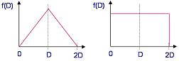

Test Yield
Models
Test Yield
is the ratio of the number of devices that pass electrical testing to
the total number of devices subjected to electrical testing, usually
expressed as a percentage (%). All semiconductor companies aim to
maximize their test yields, since low test yields mean throwing away a
large number of units that have already incurred full manufacturing
costs from wafer fabrication to assembly.
The major
causes of yield loss are processing problems, product design limitations,
and random point defects in the circuit.
Examples of
processing
problems
that could lead to low yields include: 1) excessive variations in the
oxide thickness; 2) excessive variations in doping, which can cause high
resistances in some areas; 3) masking alignment problems;
4) ionic contamination; and 5) excessive variations in the
polysilicon layer thickness, which can result in over-etched poly gates
that cause transistors to malfunction.
Poor design
of products
will also lead to low test yields, manifesting as oversensitive devices
that fail at the slightest hint of process or operational variation.
However, not all circuit sensitivity issues may be attributed solely to
improper product design. In some instances, limitations in the design
technology itself simply can not compensate for parameter variability
inherent to wafer fab processes. For instance, variations in substrate doping, ion implant dosage, and gate oxide
thickness can affect the threshold voltage of MOS devices.
Even if the
product is properly designed and no processing problems are
encountered, a lot may also exhibit test yield issues as a result of the
presence of point defects on the wafer. Point defects are usually
due to dust or particulate contamination in the environment or equipment
issues
where the wafer was processed. Point defects may also be due to
crystallographic imperfections within the silicon wafer itself.
Yield loss
mechanisms must be understood in order to keep manufacturing costs in
control, evaluate process capabilities better, and predict the
performance of future products. To understand yield loss
mechanisms, these are mathematically expressed in terms of 'yield
models', which are equations that translate defect density distributions
into predicted yields. Examples of yield models used by IC manufacturers are the Poisson
Model, the
Murphy Model, the Exponential Model, and the Seeds
Model.
Choosing a yield model is
usually done based on the actual data being experienced by the IC
manufacturer. Yield data from a specific fab process, for
instance, may be analyzed per die size and compared to results predicted
by the various models. The model that provides a best fit for the
data may be adopted for use in subsequent yield analyses.
One simple
yield model assumes a uniform density of randomly occurring point
defects as the cause of yield loss. If the wafer has a large
number of chips (N) and a large number of randomly distributed defects
(n), then the probability Pk that a given chip contains k defects may be
approximated by Poisson's distribution, or Pk = e-m (mk/k!)
where m = n/N. The yield Y is the probability that a chip has no
defects (k=0), so Y = e-m. If D is the chip defect
density, then D = n/N/A = n/NA where A is the area of each chip.
Since m=n/N, then m, which is the average number of defects per chip, is
AD. Thus,
Y = e
(-AD),
which is the
Poisson Yield
Model.
Many experts
believe that the Poisson Model is too pessimistic, since defects are
often not randomly distributed, but rather clustered in certain areas.
Defect clustering allows less defects over large areas of the wafer than
if the defects are randomly and uniformly distributed.
A simple
model that assumes a non-uniform distribution of defects gives the yield
Y as: Y= 0∫∞
e (-AD) f(D) dD, where f(D) is the distribution of the defect
density. Assuming a
triangular
defect
density distribution as shown in Figure 1a,
Y = [(1-e(-AD))/(AD)]2.
This is
Murphy's
Yield Model.
For a
rectangular
defect
density distribution as shown in Fig. 1b,
Y = (1-e(-2AD))/(2AD).
Many experimental data fit this last equation, where the defect density
is assumed to be rectangular.

Figure 1.
Triangular (left) and Rectangular (right)
Defect
Density Distributions
Another yield model is the
Exponential Yield
Model, which assumes
that high defect densities are restricted to small regions of the wafer.
Thus, the exponential yield model is best applied to instances wherein
severe defect clustering is observed. The yield Y using this model is
expressed as follows:
Y =
1/(1+AD).
Lastly, the Seeds Model gives the following equation for yield:
Y = e-√(AD).
Rejoinder:
This article is currently under review in response to the following
email. Our thanks to the email sender.
Dear
EESemi,
I happened to come across your site while Google searching for yield
models. You have a nice, one-page summary for yield models.
However, there is one obscure error. You refer to Gordon Moore's
yield model (Y = e-?(AD)) as "the Seeds Model" and don't give Seeds
credit for the model that is his, Y = 1/(1+AD), which you call the
exponential yield model.
Another yield model is the Exponential Yield Model, which assumes that
high defect densities are restricted to small regions of the wafer.
Thus, the exponential yield model is best applied to instances wherein
severe defect clustering is observed. The yield Y using this model is
expressed as follows: Y = 1/(1+AD). Lastly, the Seeds Model gives the
following equation for yield: Y = e-?(AD).
Gordon Moore presented the Y = e-?(AD) model as an empirical model I
believe in his 1970 Electronics article, "What Level of LSI is Best For
You."
R.A. Seeds should also be credited with what is now called the
Bose-Einstein yield model, Y = 1/(1+AD)^k, where k is a layer-dependent
factor. In a "Letters" article he wrote, he said that his simple Y =
1/(1+AD) model could be extended to accommodate additional critical
layers and even proposed Y = 1/(1+AD)^3, given that there were typically
only 3 critical layers at the time (Active, Gate, Metal interconnect).
This has just been extended to more layers (higher "k") as semiconductor
technology became more complex.
I don't know how this error got started. Gordon Moore happened to
mention in this paper that his empirical model approximated the Seeds
yield model in the low yield region. This low yield region is where
most of his data was and where "advanced" circuits at the time were
being developed and needed the modeling.
The first printed example I've seen of the error in calling his model
the "Seeds" model was a 1982 Technology Associates tutorial (O.D.
"Bud" Trapp).
It would be nice to see this cleared up instead of being propagated like
an internet urban legend. Unfortunately, one must go to the
library to see the original sources.
Thank you.
Best Regards,
Kimo Cummings
See
also:
Electrical Testing;
Wafer Probe/Trim
Home
Copyright
©
2005.
EESemi.com.
All Rights Reserved.